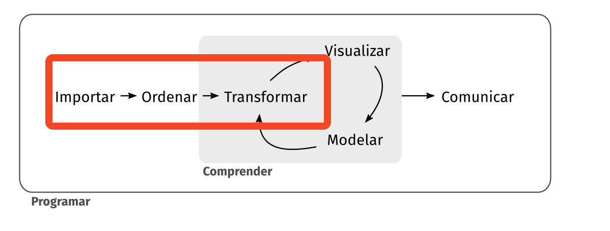

Clase 10- Trabajando con Data Frames-filas
Universidad Central de Venezuela- Escuela de Economía. 2024-2025
2024-11-18
Realizar manipulaciones a los datos contenidos en una DF según diversos criterios, en particular en operaciones que afectan a las filas u observaciones.
Si queremos determinar el nombre de los continentes
Rows: 1,704
Columns: 6
$ country <chr> "Afghanistan", "Afghanistan", "Afghanistan", "Afghanistan", "Afghanist…
$ continent <chr> "Asia", "Asia", "Asia", "Asia", "Asia", "Asia", "Asia", "Asia", "Asia"…
$ year <dbl> 1952, 1957, 1962, 1967, 1972, 1977, 1982, 1987, 1992, 1997, 2002, 2007…
$ lifeExp <dbl> 28.801, 30.332, 31.997, 34.020, 36.088, 38.438, 39.854, 40.822, 41.674…
$ pop <dbl> 8425333, 9240934, 10267083, 11537966, 13079460, 14880372, 12881816, 13…
$ gdpPercap <dbl> 779.4453, 820.8530, 853.1007, 836.1971, 739.9811, 786.1134, 978.0114, …Filter por una VariableFiltrar datos de acuerdo a un criterio
# A tibble: 12 × 6
country continent year lifeExp pop gdpPercap
<chr> <chr> <dbl> <dbl> <dbl> <dbl>
1 Venezuela Americas 1952 55.1 5439568 7690.
2 Venezuela Americas 1957 57.9 6702668 9802.
3 Venezuela Americas 1962 60.8 8143375 8423.
4 Venezuela Americas 1967 63.5 9709552 9541.
5 Venezuela Americas 1972 65.7 11515649 10505.
6 Venezuela Americas 1977 67.5 13503563 13144.
7 Venezuela Americas 1982 68.6 15620766 11152.
8 Venezuela Americas 1987 70.2 17910182 9884.
9 Venezuela Americas 1992 71.2 20265563 10734.
10 Venezuela Americas 1997 72.1 22374398 10165.
11 Venezuela Americas 2002 72.8 24287670 8605.
12 Venezuela Americas 2007 73.7 26084662 11416.Filter por dos criteriosFiltrar datos cuando se cumplen dos criterios sobre dos atributos
Filter por dos criterios sobre un mismo atributo# A tibble: 24 × 6
country continent year lifeExp pop gdpPercap
<chr> <chr> <dbl> <dbl> <dbl> <dbl>
1 Colombia Americas 1952 50.6 12350771 2144.
2 Colombia Americas 1957 55.1 14485993 2324.
3 Colombia Americas 1962 57.9 17009885 2492.
4 Colombia Americas 1967 60.0 19764027 2679.
5 Colombia Americas 1972 61.6 22542890 3265.
6 Colombia Americas 1977 63.8 25094412 3816.
7 Colombia Americas 1982 66.7 27764644 4398.
8 Colombia Americas 1987 67.8 30964245 4903.
9 Colombia Americas 1992 68.4 34202721 5445.
10 Colombia Americas 1997 70.3 37657830 6117.
# ℹ 14 more rowsFilter por dos criterios sobre dos atributos# A tibble: 8 × 6
country continent year lifeExp pop gdpPercap
<chr> <chr> <dbl> <dbl> <dbl> <dbl>
1 Colombia Americas 1992 68.4 34202721 5445.
2 Colombia Americas 1997 70.3 37657830 6117.
3 Colombia Americas 2002 71.7 41008227 5755.
4 Colombia Americas 2007 72.9 44227550 7007.
5 Venezuela Americas 1992 71.2 20265563 10734.
6 Venezuela Americas 1997 72.1 22374398 10165.
7 Venezuela Americas 2002 72.8 24287670 8605.
8 Venezuela Americas 2007 73.7 26084662 11416.Filter por dos criterios sobre dos atributos,Dos atributos a filtrar por cada criterio. En country se filtran un país o el otro país. En year se tienen que cumplir los dos criterios &
df_gapminder%>%
filter(country=='Venezuela' | country =='Colombia')%>%
filter(year>=1977 & year<= 2002)# A tibble: 12 × 6
country continent year lifeExp pop gdpPercap
<chr> <chr> <dbl> <dbl> <dbl> <dbl>
1 Colombia Americas 1977 63.8 25094412 3816.
2 Colombia Americas 1982 66.7 27764644 4398.
3 Colombia Americas 1987 67.8 30964245 4903.
4 Colombia Americas 1992 68.4 34202721 5445.
5 Colombia Americas 1997 70.3 37657830 6117.
6 Colombia Americas 2002 71.7 41008227 5755.
7 Venezuela Americas 1977 67.5 13503563 13144.
8 Venezuela Americas 1982 68.6 15620766 11152.
9 Venezuela Americas 1987 70.2 17910182 9884.
10 Venezuela Americas 1992 71.2 20265563 10734.
11 Venezuela Americas 1997 72.1 22374398 10165.
12 Venezuela Americas 2002 72.8 24287670 8605.Filter por dos criterios con operadores & y | (AND y OR)Se introduce la función between
df_gapminder%>%
filter(country=='Venezuela' | country =='Colombia')%>%
filter(between(x= year, left= 1977,right= 2002))# A tibble: 12 × 6
country continent year lifeExp pop gdpPercap
<chr> <chr> <dbl> <dbl> <dbl> <dbl>
1 Colombia Americas 1977 63.8 25094412 3816.
2 Colombia Americas 1982 66.7 27764644 4398.
3 Colombia Americas 1987 67.8 30964245 4903.
4 Colombia Americas 1992 68.4 34202721 5445.
5 Colombia Americas 1997 70.3 37657830 6117.
6 Colombia Americas 2002 71.7 41008227 5755.
7 Venezuela Americas 1977 67.5 13503563 13144.
8 Venezuela Americas 1982 68.6 15620766 11152.
9 Venezuela Americas 1987 70.2 17910182 9884.
10 Venezuela Americas 1992 71.2 20265563 10734.
11 Venezuela Americas 1997 72.1 22374398 10165.
12 Venezuela Americas 2002 72.8 24287670 8605.Filter con la función %in%Se filtran elementos que se encuentran en un vector que en este caso es c('Colombia','Venezuela')
# A tibble: 24 × 6
country continent year lifeExp pop gdpPercap
<chr> <chr> <dbl> <dbl> <dbl> <dbl>
1 Colombia Americas 1952 50.6 12350771 2144.
2 Colombia Americas 1957 55.1 14485993 2324.
3 Colombia Americas 1962 57.9 17009885 2492.
4 Colombia Americas 1967 60.0 19764027 2679.
5 Colombia Americas 1972 61.6 22542890 3265.
6 Colombia Americas 1977 63.8 25094412 3816.
7 Colombia Americas 1982 66.7 27764644 4398.
8 Colombia Americas 1987 67.8 30964245 4903.
9 Colombia Americas 1992 68.4 34202721 5445.
10 Colombia Americas 1997 70.3 37657830 6117.
# ℹ 14 more rowsFilter usando str_detectCuando no existe certeza para aplicaer el criterio de igualdad, se puede usar la función str_detect del paquete stringr la cual evalúa coincidencias parciales sobre la presencia de un patrón sobre una determinada string (cadena de texto)
# A tibble: 12 × 6
country continent year lifeExp pop gdpPercap
<chr> <chr> <dbl> <dbl> <dbl> <dbl>
1 Afghanistan Asia 1952 28.8 8425333 779.
2 Afghanistan Asia 1957 30.3 9240934 821.
3 Afghanistan Asia 1962 32.0 10267083 853.
4 Afghanistan Asia 1967 34.0 11537966 836.
5 Afghanistan Asia 1972 36.1 13079460 740.
6 Afghanistan Asia 1977 38.4 14880372 786.
7 Afghanistan Asia 1982 39.9 12881816 978.
8 Afghanistan Asia 1987 40.8 13867957 852.
9 Afghanistan Asia 1992 41.7 16317921 649.
10 Afghanistan Asia 1997 41.8 22227415 635.
11 Afghanistan Asia 2002 42.1 25268405 727.
12 Afghanistan Asia 2007 43.8 31889923 975.slice y sus variantesRebana, equivalente a seleccionar filas de la DF basadas en algún criterio.
slice_min()Valore mínimo según un criterio
slice_min() con parámetro nn Valores mínimos según un criterio. En este caso n=5
# A tibble: 5 × 6
country continent year lifeExp pop gdpPercap
<chr> <chr> <dbl> <dbl> <dbl> <dbl>
1 Colombia Americas 1952 50.6 12350771 2144.
2 Colombia Americas 1957 55.1 14485993 2324.
3 Colombia Americas 1962 57.9 17009885 2492.
4 Colombia Americas 1967 60.0 19764027 2679.
5 Colombia Americas 1972 61.6 22542890 3265.slice_min() en Rbaseslice_max()# A tibble: 1 × 6
country continent year lifeExp pop gdpPercap
<chr> <chr> <dbl> <dbl> <dbl> <dbl>
1 Venezuela Americas 1977 67.5 13503563 13144.aplica usar el argumento n , igual que en slice_min()
slice_max() en Rbaseslice_head()# A tibble: 10 × 6
country continent year lifeExp pop gdpPercap
<chr> <chr> <dbl> <dbl> <dbl> <dbl>
1 Albania Europe 1952 55.2 1282697 1601.
2 Albania Europe 1957 59.3 1476505 1942.
3 Albania Europe 1962 64.8 1728137 2313.
4 Albania Europe 1967 66.2 1984060 2760.
5 Albania Europe 1972 67.7 2263554 3313.
6 Albania Europe 1977 68.9 2509048 3533.
7 Albania Europe 1982 70.4 2780097 3631.
8 Albania Europe 1987 72 3075321 3739.
9 Albania Europe 1992 71.6 3326498 2497.
10 Albania Europe 1997 73.0 3428038 3193.slice_head() en Rbase# A tibble: 10 × 6
country continent year lifeExp pop gdpPercap
<chr> <chr> <dbl> <dbl> <dbl> <dbl>
1 Albania Europe 1952 55.2 1282697 1601.
2 Albania Europe 1957 59.3 1476505 1942.
3 Albania Europe 1962 64.8 1728137 2313.
4 Albania Europe 1967 66.2 1984060 2760.
5 Albania Europe 1972 67.7 2263554 3313.
6 Albania Europe 1977 68.9 2509048 3533.
7 Albania Europe 1982 70.4 2780097 3631.
8 Albania Europe 1987 72 3075321 3739.
9 Albania Europe 1992 71.6 3326498 2497.
10 Albania Europe 1997 73.0 3428038 3193.slice_tail()[1] "Africa"# A tibble: 10 × 6
country continent year lifeExp pop gdpPercap
<chr> <chr> <dbl> <dbl> <dbl> <dbl>
1 Zimbabwe Africa 1962 52.4 4277736 527.
2 Zimbabwe Africa 1967 54.0 4995432 570.
3 Zimbabwe Africa 1972 55.6 5861135 799.
4 Zimbabwe Africa 1977 57.7 6642107 686.
5 Zimbabwe Africa 1982 60.4 7636524 789.
6 Zimbabwe Africa 1987 62.4 9216418 706.
7 Zimbabwe Africa 1992 60.4 10704340 693.
8 Zimbabwe Africa 1997 46.8 11404948 792.
9 Zimbabwe Africa 2002 40.0 11926563 672.
10 Zimbabwe Africa 2007 43.5 12311143 470.slice_tail() en Rbase# A tibble: 11 × 6
country continent year lifeExp pop gdpPercap
<chr> <chr> <dbl> <dbl> <dbl> <dbl>
1 Zimbabwe Africa 1957 50.5 3646340 519.
2 Zimbabwe Africa 1962 52.4 4277736 527.
3 Zimbabwe Africa 1967 54.0 4995432 570.
4 Zimbabwe Africa 1972 55.6 5861135 799.
5 Zimbabwe Africa 1977 57.7 6642107 686.
6 Zimbabwe Africa 1982 60.4 7636524 789.
7 Zimbabwe Africa 1987 62.4 9216418 706.
8 Zimbabwe Africa 1992 60.4 10704340 693.
9 Zimbabwe Africa 1997 46.8 11404948 792.
10 Zimbabwe Africa 2002 40.0 11926563 672.
11 Zimbabwe Africa 2007 43.5 12311143 470.slice_sample()Una muestra aleatoria de valores filtrando previamente de acuerdo a un criterio
[1] "Asia"# A tibble: 10 × 6
country continent year lifeExp pop gdpPercap
<chr> <chr> <dbl> <dbl> <dbl> <dbl>
1 Cambodia Asia 1972 40.3 7450606 422.
2 Hong Kong, China Asia 1952 61.0 2125900 3054.
3 Philippines Asia 1987 64.2 60017788 2190.
4 Indonesia Asia 2002 68.6 211060000 2874.
5 Korea, Dem. Rep. Asia 1952 50.1 8865488 1088.
6 India Asia 2007 64.7 1110396331 2452.
7 Nepal Asia 1997 59.4 23001113 1011.
8 Lebanon Asia 1957 59.5 1647412 6090.
9 Malaysia Asia 1997 71.9 20476091 10133.
10 West Bank and Gaza Asia 1967 51.6 1142636 2650.slice_tail() en Rbase# A tibble: 10 × 6
country continent year lifeExp pop gdpPercap
<chr> <chr> <dbl> <dbl> <dbl> <dbl>
1 Cambodia Asia 1972 40.3 7450606 422.
2 Myanmar Asia 1987 58.3 38028578 385
3 Bahrain Asia 1982 69.1 377967 19211.
4 Malaysia Asia 2002 73.0 22662365 10207.
5 Cambodia Asia 2002 56.8 12926707 896.
6 China Asia 2002 72.0 1280400000 3119.
7 Korea, Rep. Asia 1967 57.7 30131000 2029.
8 Iraq Asia 1977 60.4 11882916 14688.
9 Afghanistan Asia 1982 39.9 12881816 978.
10 Korea, Dem. Rep. Asia 1967 59.9 12617009 2144.# A tibble: 300 × 6
country continent year lifeExp pop gdpPercap
<chr> <chr> <dbl> <dbl> <dbl> <dbl>
1 Haiti Americas 2007 60.9 8502814 1202.
2 Haiti Americas 2002 58.1 7607651 1270.
3 Haiti Americas 1997 56.7 6913545 1342.
4 Dominican Republic Americas 1952 45.9 2491346 1398.
5 Haiti Americas 1967 46.2 4318137 1452.
6 Haiti Americas 1992 55.1 6326682 1456.
7 Dominican Republic Americas 1957 49.8 2923186 1544.
8 Dominican Republic Americas 1967 56.8 4049146 1654.
9 Haiti Americas 1972 48.0 4698301 1654.
10 Dominican Republic Americas 1962 53.5 3453434 1662.
# ℹ 290 more rowsojo con la sobreescritura
desc()# A tibble: 300 × 6
country continent year lifeExp pop gdpPercap
<chr> <chr> <dbl> <dbl> <dbl> <dbl>
1 United States Americas 2007 78.2 301139947 42952.
2 United States Americas 2002 77.3 287675526 39097.
3 Canada Americas 2007 80.7 33390141 36319.
4 United States Americas 1997 76.8 272911760 35767.
5 Canada Americas 2002 79.8 31902268 33329.
6 United States Americas 1992 76.1 256894189 32004.
7 United States Americas 1987 75.0 242803533 29884.
8 Canada Americas 1997 78.6 30305843 28955.
9 Canada Americas 1987 76.9 26549700 26627.
10 Canada Americas 1992 78.0 28523502 26343.
# ℹ 290 more rows